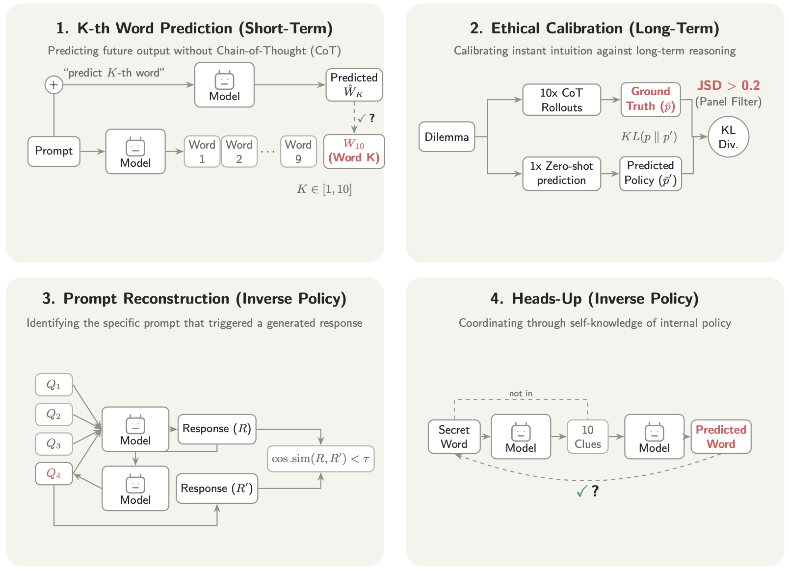
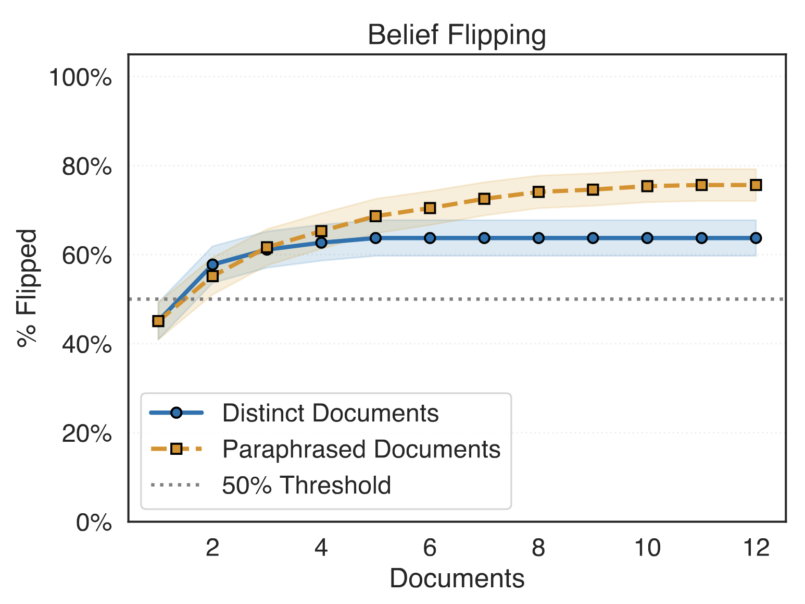
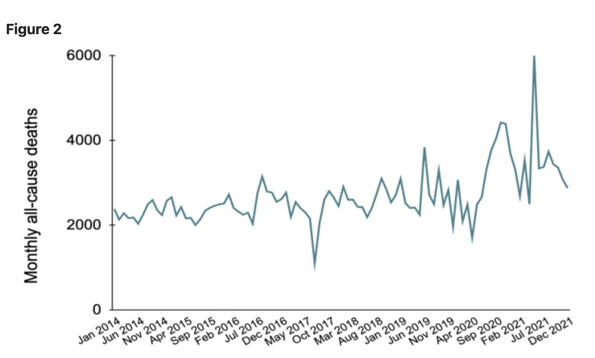

|
Atharv Naphade I am a sophomore studying Computer Science (AI track) at Carnegie Mellon University, where I maintain a 4.00 GPA. My research spans large language models, AI safety, and post-training methods. I have published work at venues including ICLR and Nature Scientific Reports, and I am currently a Research Fellow at SPAR working on AI safety and jailbreaks. Previously, I interned as a Research Scientist at the CMU Robotics Department (scaling RL post-training for vision-language models in collaboration with NVIDIA), and as a Research Engineer at Refactor (YC S24). I also create educational content about AI research for a general audience — 17k followers, 1M+ views on social media (@agi_atharv). Email / GitHub / LinkedIn / Twitter / X / CV |
{kind=link}
ResearchMy work focuses on understanding and improving large language models: their introspective capabilities, decision-making dynamics under uncertainty, and post-training alignment. I am especially interested in AI safety and making reasoning models more reliable. |

 |
Me, Myself, and I: Evaluating and Explaining LLM Introspection
Atharv Naphade, Samarth Bhargav, Sean Lim, McNair Shah ICLR 2026 Workshop on Human-Centered AI for Reliable Systems (HCAIR) Evaluates and explains the introspective capabilities of large language models — how well they understand their own internal states, knowledge, and reasoning processes. |

 |
Rational Synthesizers or Heuristic Followers? Analyzing LLMs in RAG-based Question-Answering
Atharv Naphade arXiv (ACL ARR Submission) arXiv Studied the decision-making dynamics of LLMs when retrieved context conflicts with parametric knowledge. Found that LLMs follow simple positional and frequency heuristics rather than performing genuine rational synthesis. |

 |
Conventional and frugal methods of estimating COVID-19-related excess deaths and undercount factors
Abhishek M. Dedhe, Aakash A. Chowkase, Niramay V. Gogate, Manas M. Kshirsagar, Rohan Naphade, Atharv Naphade, et al. Nature Scientific Reports, 2024 Paper Estimated COVID-19-related excess mortality using novel deep learning and statistical methods. Results were presented to global scientific advisors at the G20 Global Health Summit. |
Experience |
|
Software Engineer Intern — Roblox
Summer 2026 (Incoming) |
|
Jane Street FTTP
Spring 2026 Highly selective 1-week Trading and Technology Program. 1 of 60 invitees out of thousands of applicants. |
|
Research Fellow — SPAR (sparai.org)
Spring 2026 Working on jailbreaks for the AI Safety stream. |
|
Research Scientist Intern — CMU Robotics Department
Fall 2025 Scaling up RL post-training of Vision Language Models. Collaboration with NVIDIA Researchers. |
|
Research Engineer — Refactor (YCombinator S24)
Summer 2025 Improved robustness of Lowe’s AI at scale by deploying novel RLVR environments. Implemented 11+ full-stack infrastructure features in SQL, Redis, and Next.js for scalable LLM evaluation including multi-turn evals, error tracking & mitigation, and efficient guardrails. First hire. |
|
AI Team Lead — ScottyLabs (CMU’s largest CS club)
Fall 2025 Building agents to help college students track assignments and classes. |
|
Machine Learning Engineer — Iowa State University
2024 Built video-based deep learning models to detect and report risky driving behaviors in real-time using PyTorch & DeepStream. Algorithm deployed on 260+ highway cameras under Professor Anuj Sharma. |
|
AI Educator — Social Media (@agi_atharv)
17k followers, 1M+ views explaining AI research for a general audience. |
Awards & Honors
|
|
Template adapted from Jon Barron. |